01
1977 — PRESENTE
WILLIAMS
THE GROVE RACERS↗
Carregando notícias...
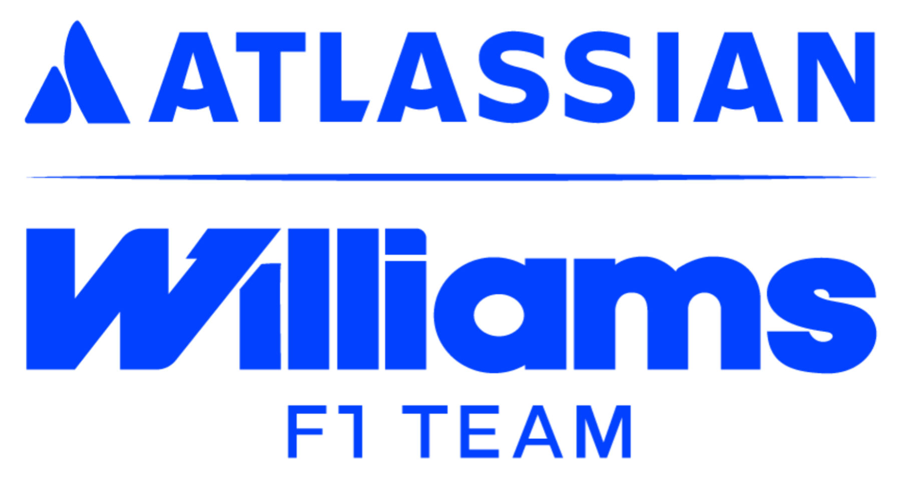
ATLASSIAN WILLIAMS F1 TEAM
Conheça a dupla que representa a Williams na Formula 1.
A Williams é uma das equipes mais tradicionais e respeitadas da história da Fórmula 1. Fundada por Frank Williams e Patrick Head, a equipe estreou na categoria em 1977 e rapidamente se tornou uma potência do automobilismo mundial.
Durante as décadas de 1980 e 1990, a Williams viveu sua era mais dominante, conquistando diversos títulos mundiais com pilotos lendários como Nigel Mansell, Alain Prost, Damon Hill, Nelson Piquet e Jacques Villeneuve. Seus carros marcaram época pela inovação tecnológica e velocidade impressionante.
Mesmo após anos difíceis e períodos de reconstrução, a Williams continua sendo uma das equipes mais icônicas da Fórmula 1. Com uma nova fase de investimentos e renovação, a escuderia britânica busca recuperar seu lugar entre as grandes forças do grid.

A Williams construiu sua história baseada em engenharia, coragem e espírito competitivo. Desde os anos 70, a equipe britânica se tornou referência na Fórmula 1 ao transformar inovação técnica em títulos mundiais e momentos históricos dentro das pistas.
Ao longo das décadas, a Williams enfrentou gigantes da Fórmula 1 sem nunca perder sua identidade. Mesmo em períodos difíceis, a equipe manteve viva sua tradição de lutar, evoluir e acreditar no retorno ao topo do automobilismo mundial.
A Williams ficou marcada por criar alguns dos carros mais dominantes da Fórmula 1, combinando tecnologia avançada, inovação e velocidade extrema.
A equipe sempre carregou uma mentalidade agressiva e determinada, buscando competir com as maiores potências da Fórmula 1 em qualquer era.
A Williams representa a essência clássica da Fórmula 1: trabalho duro, engenharia precisa e paixão genuína pelo automobilismo.
A Williams não é apenas uma equipe histórica — é um símbolo de superação e tradição dentro da Fórmula 1. Sua essência está na combinação entre legado, inovação e vontade constante de voltar ao topo.
Em Grove, na Inglaterra, está localizada a sede da Williams Racing. O complexo representa décadas de inovação, desenvolvimento técnico e momentos históricos que ajudaram a transformar a equipe em uma das maiores da Fórmula 1.
Cada área da fábrica é dedicada à evolução constante do carro — desde aerodinâmica até simulações avançadas e desenvolvimento de performance. A Williams continua trabalhando para reconstruir sua força competitiva e voltar ao topo da categoria.
A Williams acumulou títulos mundiais, vitórias lendárias e pilotos históricos, tornando-se uma das equipes mais respeitadas da Fórmula 1.
A fábrica combina engenharia avançada, análise de dados e desenvolvimento aerodinâmico para buscar performance máxima nas pistas.
A nova fase da Williams representa uma busca constante pela recuperação competitiva, investindo em estrutura, jovens talentos e inovação.
“A Williams foi construída para competir. E continuará lutando para vencer.”
Em Grove nasceu uma das equipes mais lendárias da Fórmula 1. Um lugar onde tradição, engenharia e paixão continuam movendo a Williams rumo ao futuro.
Das origens à atual Williams na Fórmula 1.
| 🏎️ Chassi Atual | FW48 |
| ⚙️ Motor Atual | Mercedes |
| 📅 Fundação | 1977 |
| 📍 Sede | Grove, Oxfordshire – Inglaterra |
| 🥇 Primeiro Campeão | Alan Jones 🇦🇺 – 1980 |
| 🏆 Último Campeão | Jacques Villeneuve 🇨🇦 – 1997 |
| 👑 Maior Campeão (1x) | Nelson Piquet Alain Prost Nigel Mansell Jacques Villeneuve Damon Hill |
| 🔥 Melhor Temporada | 1992 – 9 vitórias em 16 corridas |
| 👬 Dupla Atual | Sainz 🇪🇦 Albon 🇹🇭 |
Posição campeonato
Pontos
Pódios
Vitórias
Top 5
Avg Grid
| Etapa | GP | Albon | Sainz |
|---|
WILLIAMS 2026
Williams
Formula 1 championship points evolution
As principais figuras responsáveis pela direção, engenharia e desempenho da Williams.
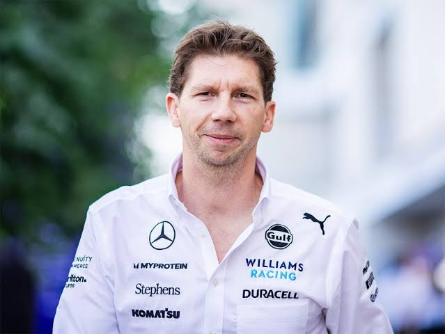
Responsável pela direção executiva e comercial da Williams.
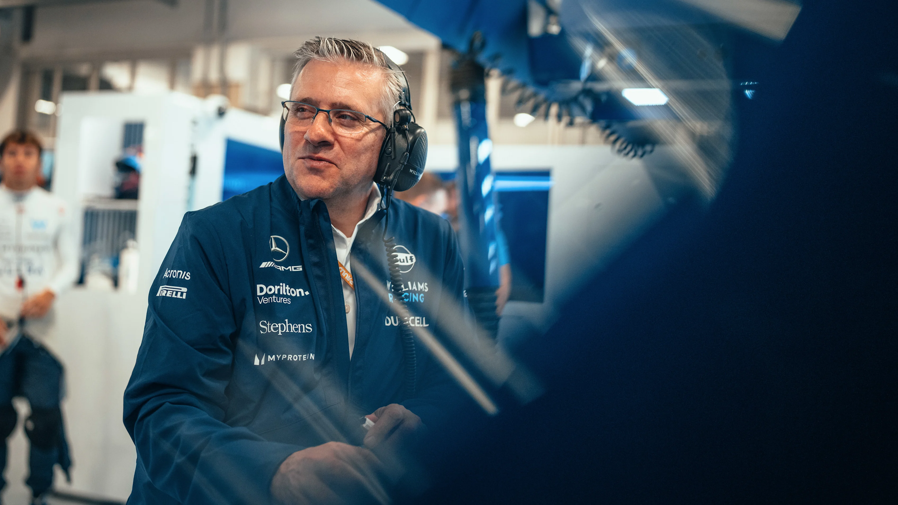
Atua no desenvolvimento técnico e na área de performance da equipe.
Coordena as estratégias da equipe durante os finais de semana de corrida.
Coordena o desenvolvimento do carro.
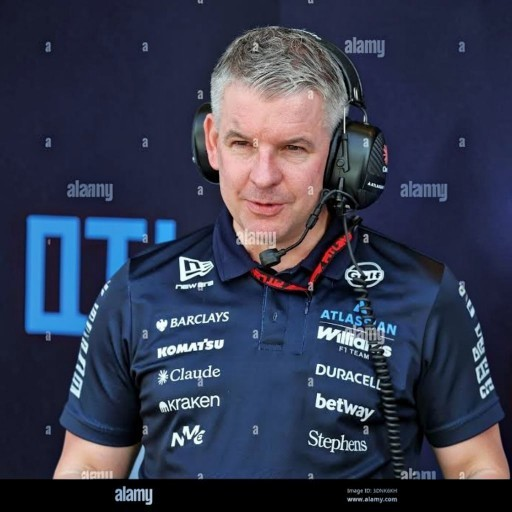
Coordena a engenharia e o design do carro da williams.
Coordena as estratégias da equipe durante os finais de semana de corrida.
Na Williams, tradição e inovação trabalham lado a lado. Desde a fábrica em Grove até os circuitos ao redor do mundo, cada setor da equipe possui um papel essencial na busca por evolução, velocidade e competitividade dentro da Fórmula 1.
São responsáveis por representar a Williams dentro da pista, buscando extrair o máximo desempenho do carro em cada sessão e corrida.
Auxiliam no desenvolvimento do carro através de simulações, ajustes virtuais e análise constante de comportamento aerodinâmico.
Trabalha para otimizar equilíbrio, pneus e acerto do carro visando melhorar ritmo e consistência durante os GPs.
Analisa estratégias, ritmo de prova e tomada de decisões em tempo real para maximizar os resultados da equipe.
Desenvolve soluções focadas em eficiência, estabilidade e ganho de desempenho em diferentes tipos de circuito.
Executam pit stops e trabalham intensamente na preparação dos carros para cada sessão da temporada.
Estuda cenários de corrida constantemente para encontrar oportunidades competitivas e melhores decisões táticas.
Monitora milhares de informações em tempo real para analisar desgaste, desempenho e comportamento do carro.
Busca criar novas soluções técnicas e evoluções para manter a Williams competitiva diante das constantes mudanças da Fórmula 1.
Sistemas avançados ajudam nas simulações, análise de desempenho e tomada rápida de decisões estratégicas.
Coordena o transporte de carros, peças e equipamentos ao redor do mundo durante toda a temporada.
Fortalece a conexão global entre a Williams e os fãs, mantendo viva uma das equipes mais tradicionais da Fórmula 1.
Em Grove, cada Williams nasce da combinação entre engenharia britânica, precisão técnica e busca constante por evolução. O desenvolvimento do carro envolve simulações avançadas, testes aerodinâmicos e refinamentos contínuos para transformar dados em performance na pista.
Tudo começa com estudos aerodinâmicos e análise de performance, buscando equilíbrio entre eficiência, estabilidade e velocidade.
Engenheiros usam softwares avançados para criar modelos virtuais e testar diferentes soluções antes da fabricação.
A aerodinâmica é refinada para maximizar downforce e eficiência em diferentes tipos de circuito.
Materiais leves e resistentes são usados para garantir segurança e performance em condições extremas.
Pilotos e engenheiros trabalham juntos no simulador para ajustar comportamento e melhorar consistência do carro.
Ao longo da temporada, a equipe desenvolve atualizações constantes para ganhar cada milésimo de segundo possível.
“Em Grove, cada detalhe existe por um único objetivo: evoluir e competir no mais alto nível.”
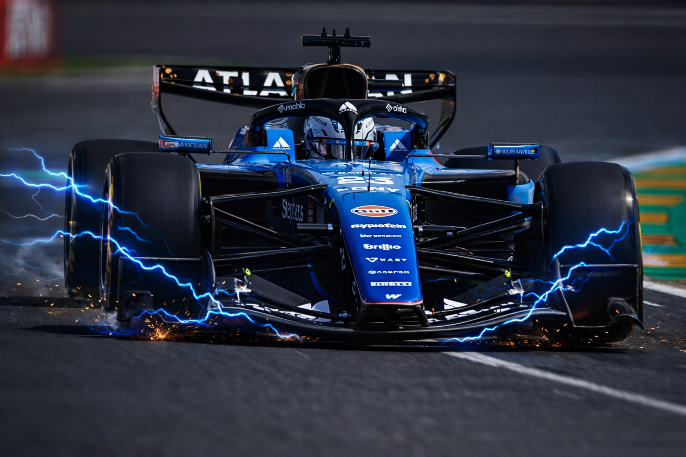
🏁 Corridas
🥇 Vitórias
⚡ Poles
🥉 Pódios
📈 Pontos no Total
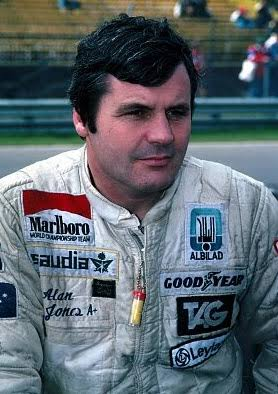
🇦🇺 Jones
1º🏆🇫🇮 Rosberg
1º🏆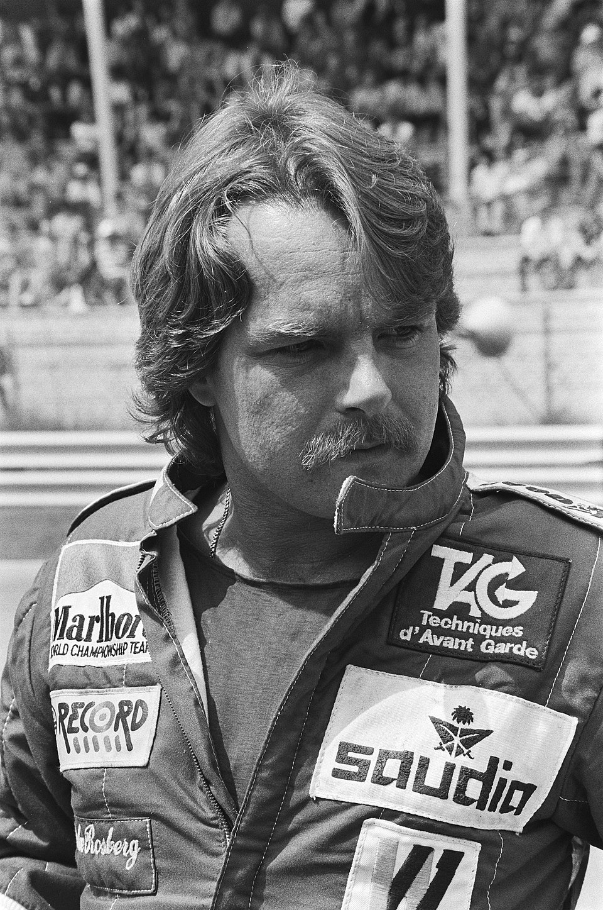
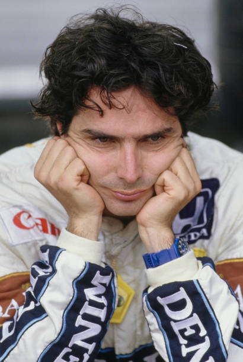
🇧🇷 Piquet
3º🏆🇬🇧 Mansell
1º🏆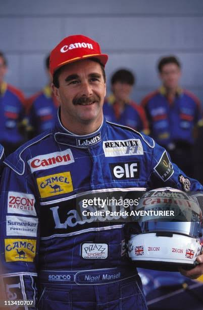
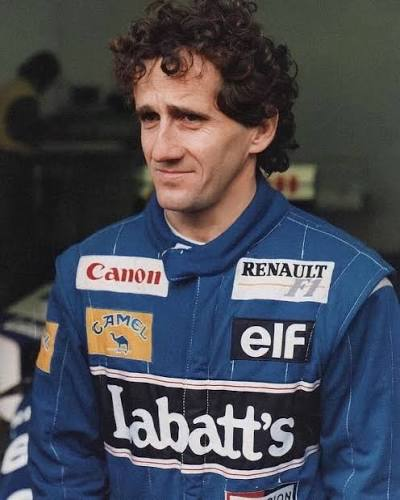
🇫🇷 Prost
4º🏆🇬🇧 Hill
1º🏆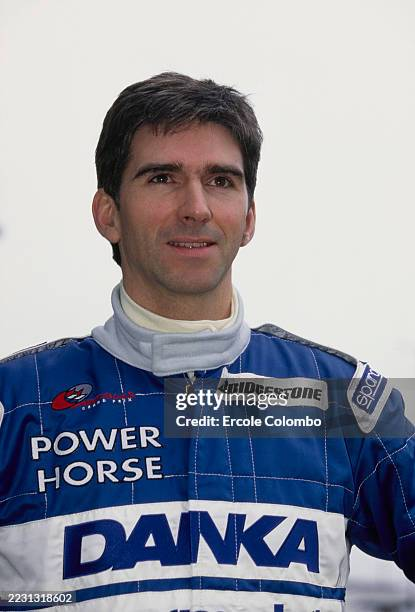
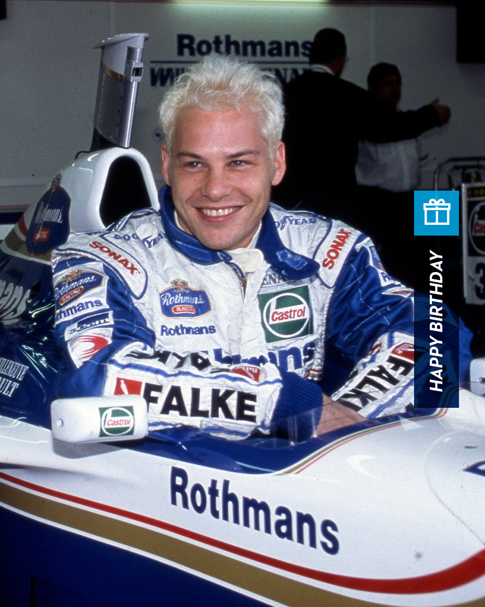
🇨🇦 Villeneuve
1º🏆Jones
Reutemann
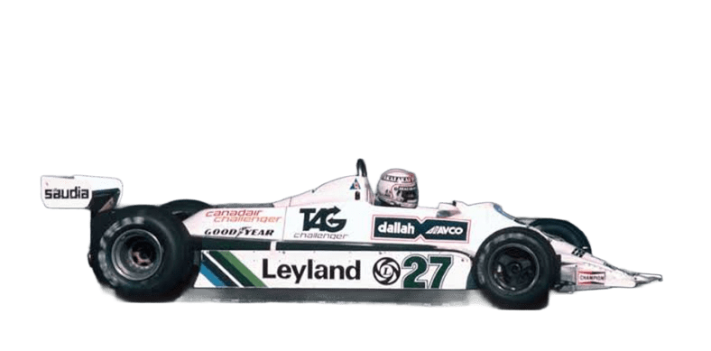
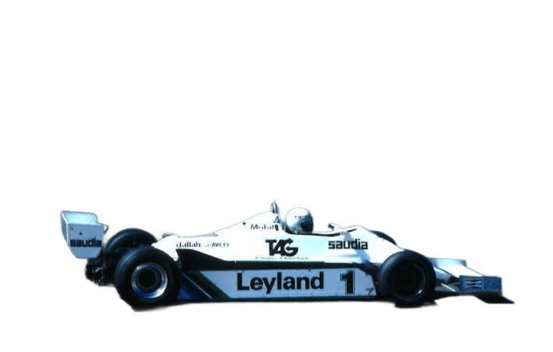
Jones
Reutemann
Mansell
Piquet
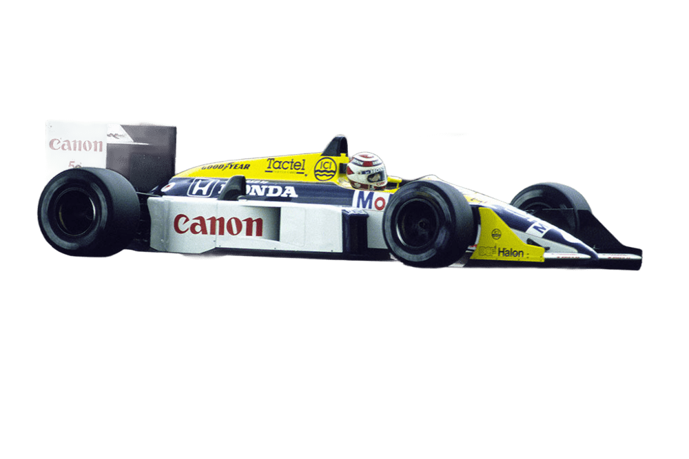
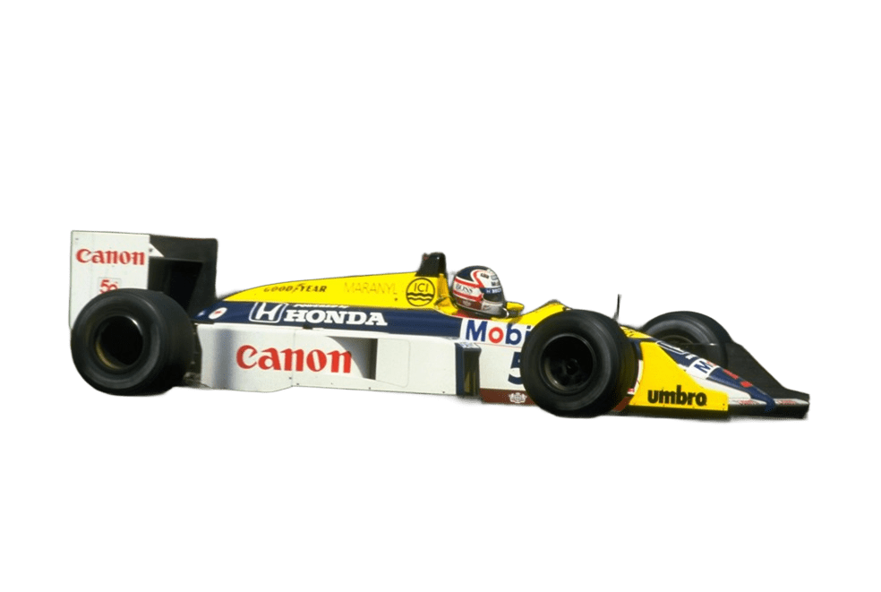
Piquet
Mansell
Mansell
Patrese
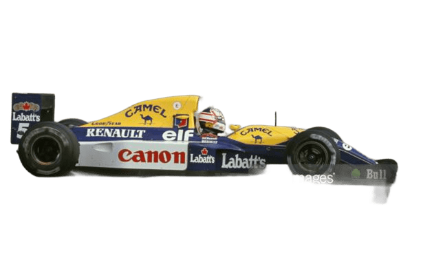
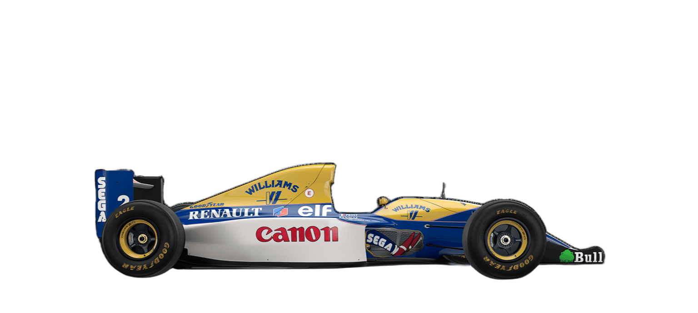
Prost
Hill
Hill
Coulthard
.png)
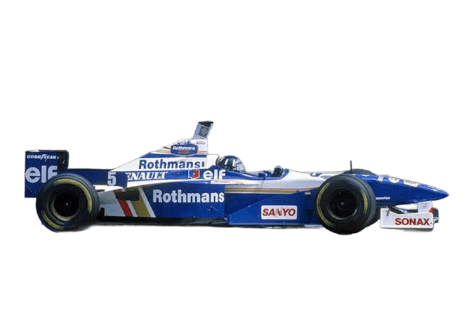
Hill
Villeneuve
Villeneuve
Frentzen
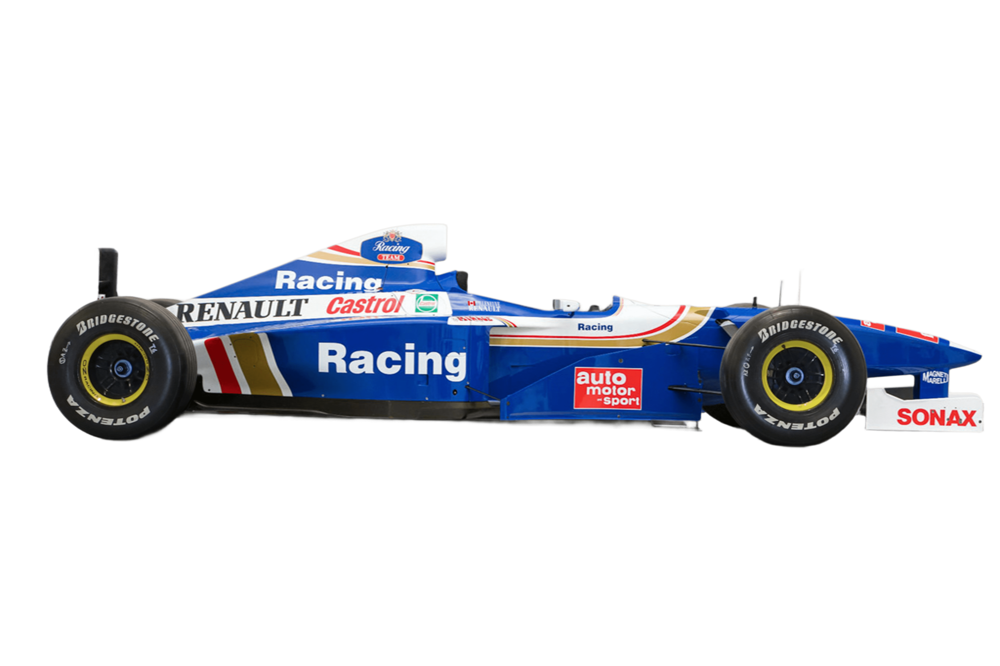
Primeiro título dominante da Williams na era moderna da F1
Campeão inesperado em uma das temporadas mais imprevisíveis
Campeão técnico e estratégico da Williams
Um dos campeões mais dominantes da Williams
O “Professor” que levou a Williams ao topo da F1
Campeão emocional após anos de evolução na Williams
Último campeão mundial da Williams na era de ouro